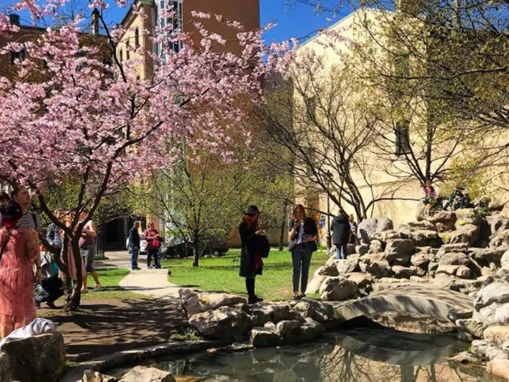
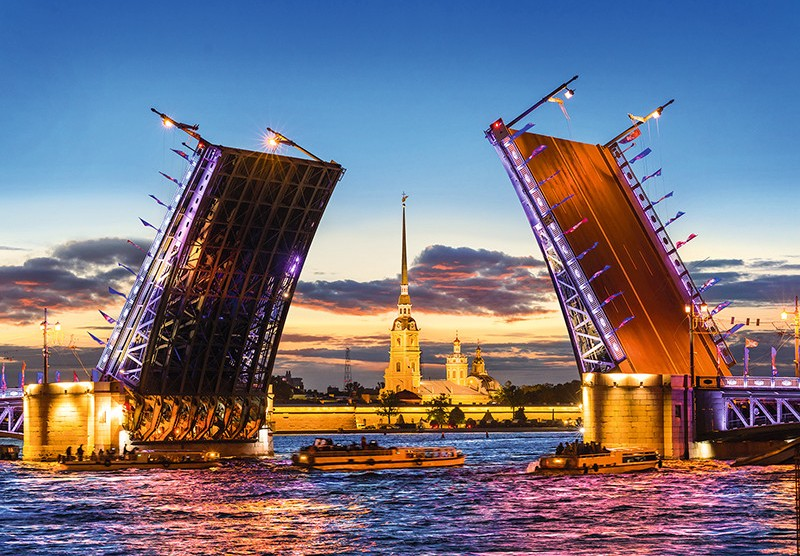

Сад дружбы
«Сад дружбы» — уютный китайский сад в центре Санкт‑Петербурга: уголок восточной культуры и умиротворения в сердце мегаполиса.
Адрес: Санкт‑Петербург, Литейный проспект, между домами № 15 и 17–19, ст. метро «Чернышевская».
Режим работы: Eжедневно, круглосуточно.
Средний чек: Бесплатно.

Дворцовый мост
«Дворцовый мост» — легендарный разводной мост через Неву и один из главных символов Санкт‑Петербурга: визитная карточка города с завораживающими видами на Эрмитаж и Петропавловскую крепость.
Адрес: Санкт‑Петербург, Дворцовый мост (соединяет Адмиралтейский остров с Васильевским островом через Большую Неву), ст. метро — «Адмиралтейская».
Режим работы: Открыт для свободного посещения. Время разведения ночью зависит от ежегодного расписания.
Средний чек: Бесплатно. Для красивых фото доступны ночные катера, которые подвозят прямо к мосту во время разведения, их стоимость от 1000 рублей.
